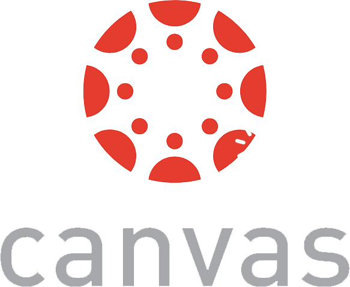

You explore and use professional design tools and you iteratively design visual works.
Ik maak gebruik van veel verschillende ontwerp software. Tijdens de vierjarige opleiding 'media vormgeving' en eerdere stages die ik heb gelopen, heb ik veel gewerkt met Adobe software. Ik kan goed en snel werken met de meeste Adobe software, namelijk: Photoshop, Illustrator, Indesign, Premiere Pro, Adobe dimensions en After Effects. Naast alleen Adobe software, heb ik ook al veel gewerkt met Figma.
Om mijn vaardigheden binnen deze software (en eventueel meer) uit te breiden, experimenteer ik veel met nieuwe features/tools binnen de software. Ook ben ik op de hoogte van veel social media kanalen waarop korte tutorials worden geplaatst of nieuwe features worden behandeld. Een voorbeeld van zo een social media is: @timhosqo (Instagram).
Mijn iteratieve proces sla ik altijd op als werkbestand (vector). Zo kan het altijd makkelijk en snel worden aangepast. In mijn portfolio is terug te zien dat ik mijn iteraties altijd toon en ook zorg dat ontwerpen duidelijk worden weergegeven (voorbeeld: Logo overzicht en iteraties project 1).
